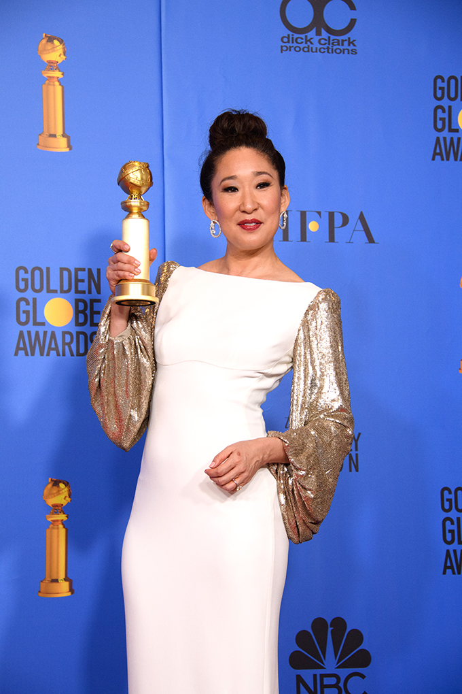

SANDRA OH - ACHIEVEMENTS
Sandra Oh's Achievements

Sandra Oh starred in many films and movies. She is not only credited for an actress, but also producer, soundtrack, writer, additional crew, etc. She's been nominated for many awards, and even won quite a few of them, including the Boston Society of Film Critics Awards, Broadcast Film Critics Association Awards, CableACE Awards, etc.
Sandra Oh's Movies
-School's Out! (1992)- Waitress (uncredited)
-The Diary of Evelyn Lau (1994)- Evelyn Lau
-Double Happiness (1994)- Jade Li
-Cagney & Lacey: The View Through the Glass Ceiling (1995)- Officer Angela Lum
-Bean (1997)- Bernice Schimmel
-Bad Day on the Block (1997)
-Last Night (1998)- SANDRA
-The Red Violin (1998)- Madame Ming
-Permanent Midnight (1998)- Friend
-Guinevere (1999)- Cindy
-Waking the Dead (2000)- Kim
-Dancing at the Blue Iguana (2000)- Jasmine
-The Princess Diaries (2001)- Vice Principal Gupta
-Big Fat Liar (2002)- Mrs. Phyllis Caldwell
-Full Frontal (2002)- Fourth Fired Employee
-Long Life, Happiness & Prosperity (2002)- Kin Ho Lum
-Owning Mahowny (2003)
-Rick (2003)- Michelle
-Under the Tuscan Sun (2003)- Patti
-Wilby Wonderful (2004)- Carol French
-Sideways (2004)- Stephanie
-Mulan II (2004)- Ting Ting
-Hard Candy (2005)- Judy Tokuda
-Break a Leg (2005)- Young Turk
-3 Needles (2005)- Mary the Nun
-Sorry, Haters (2005)- Phyllis Magintyre
-Cake (2005)- Lulu
-The Night Listener (2006)- Anna
-For Your Consideration (2006)
-The Land Before Time XIII: The Wisdom of Friends (2007)
-Blindness (2008)- Minister of Health
-Defendor (2009)- Dr. Ellen Park
-Ramona and Beezus (2010)- Mrs. Meacham
-Rabbit Hole (2010)- Gabby
-Quantum Quest: A Cassini Space Odyssey (2010)
-Thorne: Scaredycat (2010)- Sarah Chen
-Tammy (2014)- Susanne
-Cleo (2015)
-Window Horses (2016)- Rosie Ming
-Catfight (2016)- Veronica
-Meditation Park (2017)- Ava
-Over the Moon (2020)- Mrs. Zhong
-Raya and the Last Dragon (2021)- Virana
Sandra Oh's TV shows
| Title |
Year |
Character |
| Denim Blues |
1989 |
Gwen |
| E.N.G. |
1993 |
Protestor |
| If Not for You |
1995 |
Anna |
| Lonesome Dove: The Outlaw Years |
1995 |
Ming Li |
| Kung Fu: The Legend Coninues |
1996 |
Mai Chi |
| Cousin Skeeter |
1998 |
Mrs. Woo |
| Happily Ever After: Fairy Tales for Every Child |
1999 |
Breadcrumb |
| Popular |
1999 |
Humanities Teacher |
| Further Tales of the City
| 2001 |
Bambi Kanetaka |
| Six Feet Under |
2001 |
---------- |
Sandra Oh's Short Films
| Title |
Year |
Character |
| The Journey Home |
1989 |
---------- |
| Prey |
1995 |
Il Bae |
| Cowgirl |
1996 |
Sarah Hwang |
| Three Lives of Kate |
2001 |
Narrator |
| Date Squad |
2001 |
---------- |
| Barrier Device |
2002 |
Audrey |
| It wasn't supposed to Be Like This... |
2003 |
---------- |
| 8 Minutes to Love |
2004 |
Joy |
| Stationary |
2005 |
---------- |
| Kind of a Blur |
2005 |
Joe |
| Falling |
2007 |
Melanie |
| A Helping Hand |
2012 |
Cynthia |
| The Scarecrow |
2015 |
Evelyn |
Sandra Oh's Awards (nominees & wins)

4 columns: 1 is win or nominee, 1 is year, 1 is the award, and 1 movie/tv show
-1994- Winner- Feature film (Double Happiness)- Torino International Festival of Young Cinema
-1994- Winner- Best Performance by an Actress in a Leading Role (Double Happiness)- Genie Awards
-1994- Winner- Fiction: Actress (The Diary of Evelyn Lau)- Biarritz International Festival of Audiovisual Programming
-1995- Nominee- Best Performance by an Actress in a Leading Role in a Dramatic Program or Mini-Series (The Diary of Evelyn Lau)- Gemini Awards
-1997- Winner- Actress in a Comedy Series (Arli$$)- CableACE Awards
-1998- Winner- (Last Night)- Vancouver International Film Festival
-1999- Winner- Best Performance by an Actress in a Leading Role (Last Night)- Genie Awards
-2000- Nominee- Best Actress (Late Night)- Chlotrudis Awards
-2001- Winner- (Dancing at the Blue Iguana)- MIFF Awards
-2001- Nominee- Outstanding Supporting Actress in a Comedy Series (Arli$$)- Image Awards (NAACP)
-2003- Best Performance (Arli$$)- Comedy- NAMIC Vision Awards
-2004- Winner- Best Ensemble Acting (Sideways)- PFCS Award
-2004- Winner- Best Ensemble Cast (Sideways)- Boston Society of Film Critics Awards
-2004- Winner- Best Cast Ensemble (Sideways)- Awards Circuit Community Awards
-2004- Nominee- Best Actress in a Supporting Role (Sideways)- Awards Circuit Community Awards
-2005- Nominee- Best Ensemble Cast (Sideways)- INOCA
-2005- Winner- Outstanding Performance by a Cast in a Motion Picture (Sideways)- Screen Actors Guild Awards
-2005- Nominee- Outstanding Actress in a Supporting Role in a Series, Mini-Series or Motion Picture Made for Television (Grey's Anatomy)- Satellite Award
-2005- Winner- Best Ensemble (Sideways)- Online Film & Television Association
-2005- Nominee- Ensemble Cast (Sideways)- Gold Derby Awards
-2005- Nominee- Best Ensemble (Sideways)- Central Ohio Film Critics Association
-2005- Winner- Best Acting Ensemble (Sideways)- Broadcast Film Critics Association Awards
-2005- Nominee- Outstanding Supporting Actress in a Drama Series (Grey's Anatomy)- Primetime Emmy Awards
-2006- Nominee- Drama Supporting Actress (Grey's Anatomy)- Gold Derby Awards
-2006- Nominee- Ensemble of the Year (Grey's Anatomy)- Gold Derby Awards
-2006- Nominee- Outstanding Performance by an Ensemble in a Drama Series (Grey's Anatomy)- Screen Actors Guild Awards
-2006- Winner- Outstanding Performance by a Female Actor in a Drama Series- Screen Actors Guild Awards
-2006- Winner- Best Esemble, Television (Grey's Anatomy)- Satellite Award
-2006- Winner Best Supporting Actress in a Drama Series (Grey's Anatomy)- Online Film & Television Association
-2006- Winner- Best Performance by an Actress in a Supporting Role in a Series, Miniseries or Motion Picture Made for Television (Grey's Anatomy)- Golden Globes,
-2006- Nominee Best Supporting Actress (Wilby Wonderful)- Chlotrudis Awards
-2006- Nominee- Outstanding Supporting Actress in a Drama Series (Grey's Anatomy)- Primetime Emmy Awards
-2007- Winner- Outstanding Performance by an Ensemble in a Drama Series (Grey's Anatomy)- Screen Actors Guild Awards
-2007- Nominee- Best Supporting Actress in a Drama Series (Grey's Anatomy)- Online Film & Television Association
-2007- Nominee- Outstanding Actress- Drama Series (Grey's Anatomy)- Monte-Carlo TV Festival
-2007- Nominee- Ensemble of the Year (Grey's Anatomy)- Gold Derby Awards
-2007- Nominee- Drama Supporting Actress (Grey's Anatomy)- Gold Derby Awards
-2007- Nominee- Outstanding Supporting Actress in a Drama Series (Grey's Anatomy)- Primetime Emmy Awards
-2008- Nominee- Outstanding Performance by an Ensemble in a Drama Series (Grey's Anatomy)- Screen Actors Guild Awards
-2008- Nominee- Outstanding Supporting Actress in a Drama Series (Grey's Anatomy)- Primetime Emmy Awards
-2009- Nominee- Outstanding Supporting Actress in a Drama Series (Grey's Anatomy)- Primetime Emmy Awards
-2010- Nominee- Outstanding Actress in a Drama Series (Grey's Anatomy)- Image Awards (NAACP)
-2010- Nominee- Drama Supporting Actress of the Decade (Grey;s Anatomy)- Gold Derby Awards
-2011- Nominee- Favorite TV Doctor (Grey's Anatomy)- People's Choice Awards, USA
-2011- Nominee- Favorite TV Drama Actress- People's Choice Awards, USA
-2011- Nominee- Outstanding Supporting Actress in a Drama Series (Grey's Anatomy)- Image Awards (NAACP)
-2012- Nominee- Outstanding Actress in a Drama Series (Grey's Anatomy)- Image Awards (NAACP)
-2012- Nominee Drama Supporting Actress (Grey's Anatomy)- Gold Derby Awards
-2013 Nominee- Outstanding Actress in a Drama Series (Grey's Anatomy)- Image Awards (NAACP)
-2014- Nominee- Favorite TV Gal Pals (Grey's Anatomy)- People's Choice Awards, USA
-2014- Nominee- Favourite Dramatic TV Actress- People's Choice Awards, USA
-2015- Winner- Favourite TV Chaaracter We Miss Most (Grey's Anatomy)- People's Choice Awards, USA
-2016- Winner- Best Actress in a Short (The Scarecrow)- Hollywood Reel Independant Film Festival
-2018- Nominee- Individual Achievement in Drama (killing Eve)- Television Critics Association Awards
-2018- Nominee- Best Actress in a Drama Series (Killing Eve)- Online Film & Television Association
-2018- Nominee- Best Dramatic TV Performance (Killing Eve)- IGN Summer Movie Awards
-2018- Nominee- Drama Actress (Killing Eve)- Gold Derby Awards
-2018- Nominee- Outstanding Lead Actress in a Drama Series (Killing Eve)- Primetime Emmy Awards
-2019- Winner- Outstanding Performance by a Female Actor in a Drama Series (killing Eve)- Screen Actors Guild Awards
-2019- Nominee-Best Actress in a Series, Drama/Genre (Killing Eve)- Satellite Awards
-2019- Nominee- Actor- Female (Killing Eve)- RTS Television Award
-2019- Winner- Best Actress in a Drama Series (Killing Eve)-Online Film & Television Association
-2019- Nominee- Outstanding Actress- Drama Series (Killing Eve)- Monte-Carlo TV Festival
-2019- Winner- Best Performance by an Actress in a Television Series - Drama (Killing Eve)- Golden GLobes, USA
-2019- Nominee- Comedy Guest Actress (SNL)- Gold Derby Awards
-2019- Nominee- Drama Lead Actress (Killing Eve)- Gold Derby Awards
-2019- Winner- TV Performance of the Year - Actress (Killing Eve)- GALECA: The Society of LGBTQ Entertainment Critics
-2019- Nominee Best Performance in a TV Series (Killing Eve)- Etna Comics International Film Festival
-2019- Nominee- Best Actress (Killing Eve)- Broadcasting Press Guild Awards
-2019- Winner- Best Actress in a Drama Series (Killing Eve)- Broadcast Film Critics Association Awards
-2019- Nominee- Best Actress in a Television Series (Killing Eve)- Academy of Science Fiction, Fantasy & Horror Films, USA
-2019- Nominee- Best Leading Actress (Killing Eve)- BAFTA Awards
-2019- Nominee- Outstanding Guest Actress in a Comedy Series (SNL)- Primetime Emmy Awards
-2019- Nominee- Outstanding Drama Series (Killing Eve)- Primetime Emmy Awards
-2019- Nominee- Outstanding Lead Actress in a Drama Series (Killing Eve)- Primetime Emmy Awards
-2019- Nominee- Outstanding Variety Special (Live) (The 76th Annual GOlden Globe Awards 2019)- Primetime Emmy Awards
-2020- Nominee- Actress Drama Series (Killing Eve)- Women's Image Network Awards
-2020- Nominee- Favorite Drama TV Star (Killing Eve)- People's Choice Awards, USA
-2020- Nominee- Favorite Female TV Star (Killing Eve)- People's Choice Awards, USA
-2020- Nominee- Best Actress in a Drama Series (Killing Eve)- Online Film & Television Association
-2020- Nominee- Outstanding Drama Series (Killing Eve)- Primetime Emmy Awards
-2020- Nominee- Outstanding Lead Actress in a Drama Series (Killing Eve)_ Primetime Emmy Awards
-2021- Nominee- Best Actress in a Series, Drama/Genre (Killing Eve)- Satellite Awards
-2021- Nominee- Best Kiss (Killing Eve)- MTV Movie + TV Awards
TOTAL IS 25 WINS AND 60 NOMINATIONS
Sandra Oh made history 3 times at the Golden Globe. First of all, Oh is the first person of Asian descent to host the Golden Globes. Second, she is the first woman of Asian descent to win multiple Golden Globes awards. And lastly, Oh is the first woman of Asian descent in 39 years to win a Golden Globe for best actress in a TV drama.